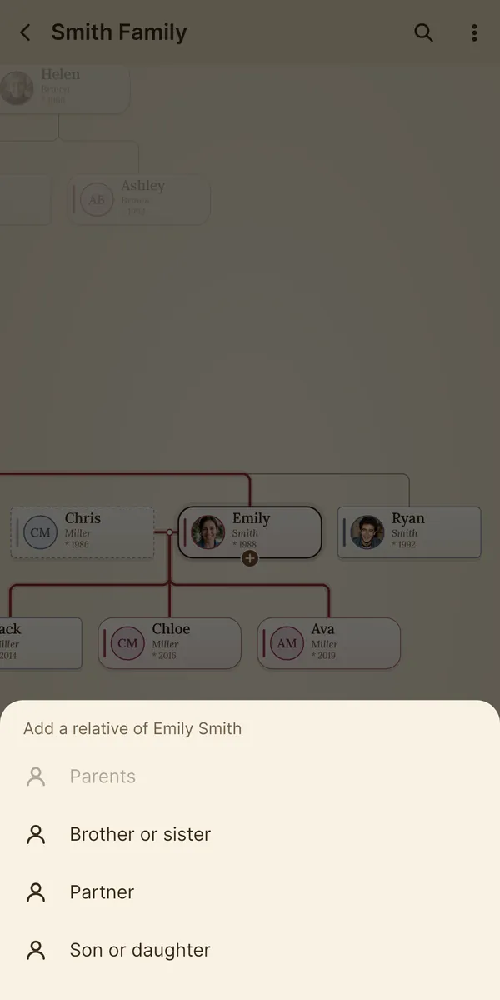
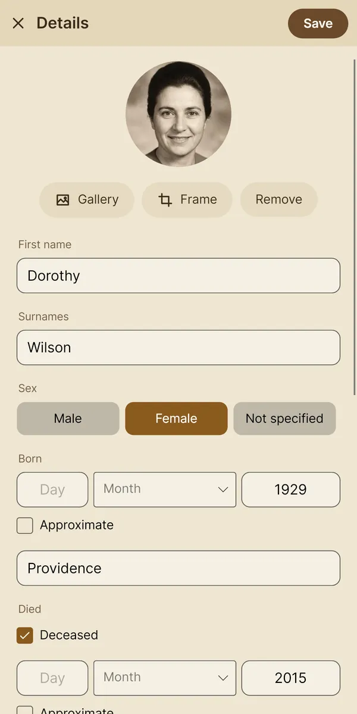
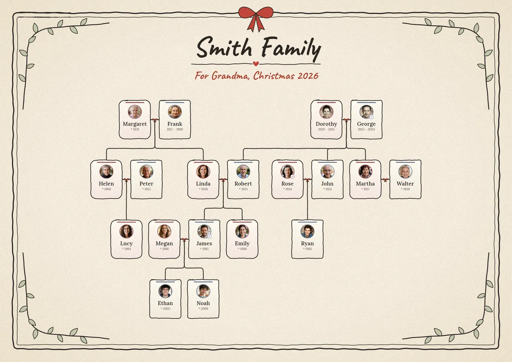
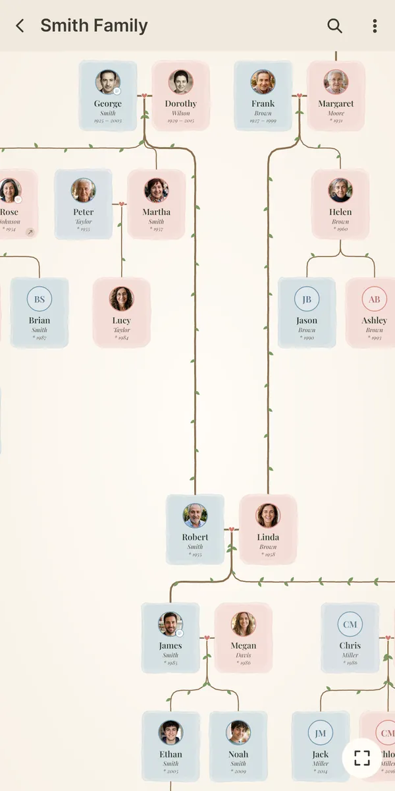
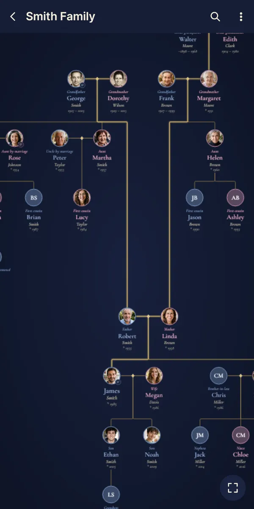
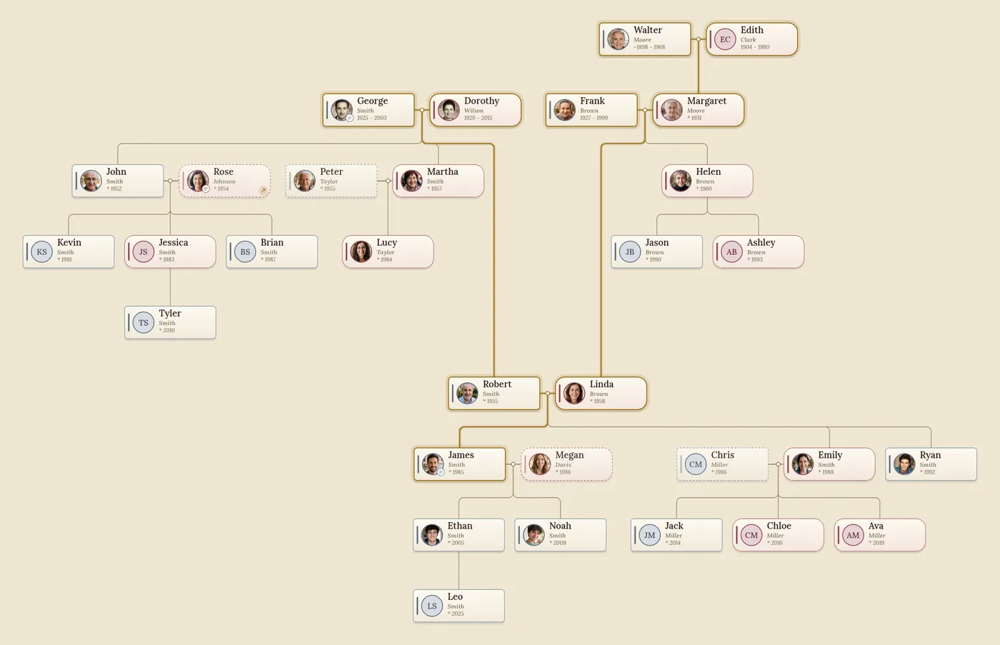
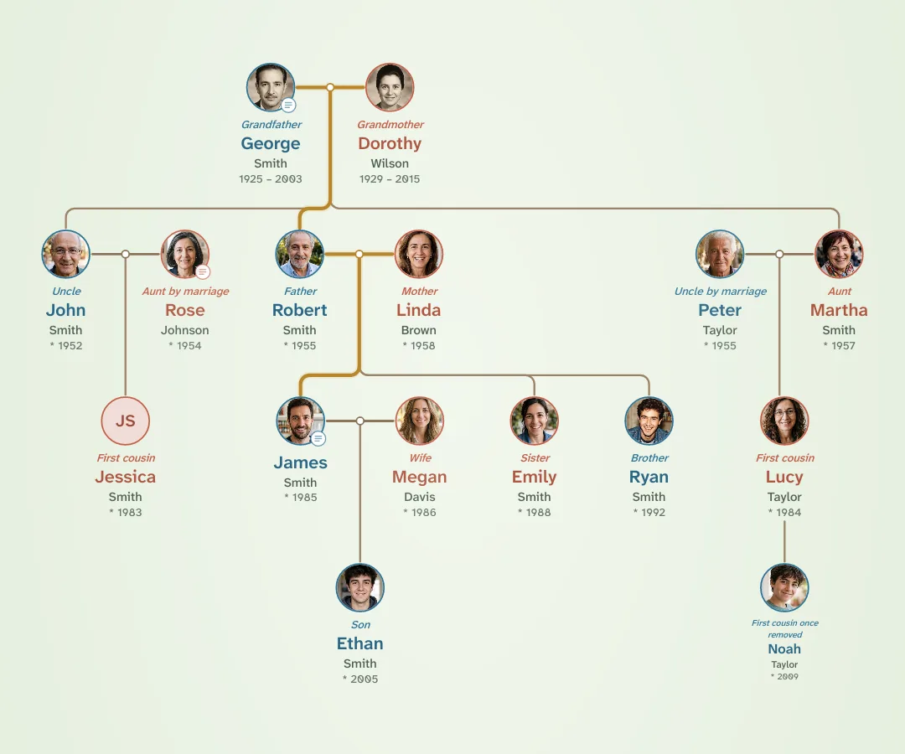

Easy Family Tree
Your family tree, easy to make and to give
Build your family tree on your phone, share it as a PDF with the whole family, and print it big to hang at home or give as a gift.
Free to start · No account, no ads · No subscription


Easy from the first minute
Start with yourself. Tap a card and add that person's parents, partner, children or siblings: Ramo arranges the tree by itself, even when the family grows large. No genealogy knowledge or manuals needed.
- Photos from the gallery or the camera, with approximate dates when you don't know the exact ones.
- Each person's story: where they were born, what they did, the family anecdotes.
- Find anyone by name, and tap someone to light up their ancestors and descendants.


Print it or give it as a gift
Ramo spreads the tree over one or more sheets (Letter, Tabloid, A4…) to cut out and tape together, in color or black and white, and shows you first how it will look and how big the names will be.
Or turn it into a gift print with a title, a dedication and a frame, in the most common frame sizes: 11×14, 16×20 and 18×24 in (or 30×40, 40×50 and 50×70 cm). A gift for grandparents, for Christmas or for a family reunion.
How to print a large family tree poster · Christmas gift ideas

A clear, beautiful tree, your way
- Ten styles, such as Watercolour, Golden night, Paper and ink or Parchment, each with its own colors and font.
- Cards your way: wide or tall, boxed or as round portraits, with a photo or just the name.
- Six ways to lay out the tree, including left to right for very wide families.
- How everyone is related to the main person: second cousin, great-uncle, grandniece, mother-in-law…
- Each couple's wedding date and place, and a morning reminder of family birthdays.
- Import and export GEDCOM, the format used by other genealogy apps.


No accounts: everything on your phone
No sign-up and no ads. Your trees are stored only on your phone and work offline: they're never sent to any server and nobody else sees your data. A backup keeps everything in a single file.
Also on your computer
Ramo is available for Android on Google Play and for Windows on the Microsoft Store. Trees are .ramo files that open the same way on both: move them across and pick up where you left off, on the big screen.

Free to start, one payment for everything
Free
- Build your tree, up to 50 people.
- Open and edit every tree you're sent.
- Share it as a PDF or image and print it on sheets, with a small “Made with Ramo” mark.
- No ads.
Ramo Complete
- One payment, no subscription.
- Unlimited trees and people.
- Gift prints.
- Linked trees (in-laws in their own tree).
- PDFs, images and prints without the mark.
Ramo Complete is bought inside the app, on Google Play or on the Microsoft Store.
Guides
How to print your family tree as a large posterWhich size to choose, how to keep the names readable and what to ask the print shop for.
A family tree as a Christmas giftIdeas for grandparents and the whole family, and a timeline to have it ready in time.

Cousin calculator: what is a second cousin, or a cousin once removed?Find out how you are related to anyone in the family, with a relationship chart. How to make a family tree, step by stepWhat to ask, where to look and how to organize it, with a free printable template.
How to make a family tree, step by stepWhat to ask, where to look and how to organize it, with a free printable template.
 Family tree for kids: how to do the school projectA printable template, ideas with photos and drawings, and tips for every kind of family.
Make your family tree online, freeAdd your grandparents, parents, aunts, uncles, cousins and siblings, and download it as a PDF or image.
Family tree for kids: how to do the school projectA printable template, ideas with photos and drawings, and tips for every kind of family.
Make your family tree online, freeAdd your grandparents, parents, aunts, uncles, cousins and siblings, and download it as a PDF or image.